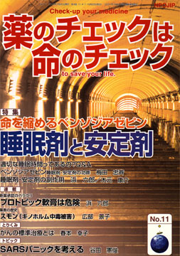

No.11 特集 睡眠剤と安定剤 2004年1月 第2刷発行 （絶版）
 「寝るほど楽なことがあろかいな」。睡眠や抗不安剤の特集をするにあたって、まず思い出したのが、幼い頃に祖母がよく言っていたこの言葉です。寝る間も惜しんで忙しくしている人にとって、わずかな「睡眠時間」がどれほど楽で貴重なものであるか。しかし、一方、眠りたいのに眠られない人には、その悶々と過ごす時間はこの上もなく苦痛であるのも確かでしょう。
人は何時間寝たらよいのでしょう。何時間眠るのが一番健康でいられるのか。アメリカのある調査によると、7時間眠っている人のほうが、8時間眠っている人よりも長生きであったという結果が出ています（文献1）。これをどう解釈すればよいのでしょうか。8時間睡眠をとっている人は7時間に減らしたほうがよいのか。
不眠症というと、精神的なものと考えられがちですが、体の病気は関係しないのでしょうか。眠りすぎの害は？
また、睡眠を妨げる「不安」はどうでしょう。そもそも「不安のない状態」はあるのでしょうか。不安を抑制するとどうなるのでしょう。
特集では、不眠や不安を解消し、薬に頼らない睡眠を得るにはどうすればよいのかを一緒に考えます。そして、「不眠」や「不安」の治療として現在もっともよく使用され、乱用されがちのベンゾジアゼピン系薬剤に焦点をあて、徹底的に掘り下げます。
（文献1）Kripke DF, et al. Arch Gen Psychiat. 39:131-138, 2002.
（絶版）
もくじ
■メッセージ
古賀 真子氏 （日本消費者連盟 事務局員）
特集
■適切な睡眠時間ってあるの？ Q&A
■ベンゾジアゼピン 睡眠剤・安定剤の功罪
■コラム ハルシオン・スキャンダル
■不眠・睡眠剤にまつわる話
■ベンゾジアゼピン 睡眠剤・安定剤の副作用
■薬の説明書の読み方（NPOJIPの判定付き）
・トリアゾラム（ハルシオン）
・ジアゼパム
連載
■Coffee無礼区
■映画の中のクスリ（5） 睡眠剤
■みんなのやさしい生命倫理 １１
日本の生命倫理の歴史（３） 医は仁術
■新薬承認のカラクリ
アトピー特効薬？ プロトピック軟膏は危険/がんになったらだれの責任？
■リレーエッセイ あるデメさんとくすり
■薬害の歴史（7） スモン（キノホルム中毒被害）
■行ってきました
その１ 患者の権利オンブズマン/全国連絡委員会主催シンポジウム
その２ 医療事故調査会第８回シンポジウム
とりくみ
■医師（医療機関）とのつき合い方−NPOJIPへの相談事例から
がんの標準治療とは
トピック
■SARSパニックを考える
■質問箱
Q:透析患者におけるアロプリノールの使用について
提言
■NPOJIPの提言
小児用プロトピック軟膏を承認すべきでない
■読者の声
・「不安解消」
・「正しい情報を伝えたい」 など
■書評
・『医療ミス』
・『ようこそダウン症の赤ちゃん』
・『ピルの危険な話』
・『世界医薬産業の犯罪』
■NPOJIPおよび関連書籍/TIP出版物
■NPOJIP書籍申込み用紙
■編集後記
病院でよく聞く言葉
（特集にちなんだ言葉を簡潔に解説）忙しい人はまずここから
○睡眠剤 −安易な使用は禁物
○離脱症候群 −使用していた薬剤把握を
○安定剤 −依存の強さ認識を
○抗けいれん剤 −素人判断で中止は危険
○全身麻酔剤 −重要な呼吸・血圧の監視
（日本経済新聞に浜六郎が掲載していたものを改変。加筆、新しく追加したものを含む）
トピックより
SARSパニックを考える
谷田憲俊（山口大学医学部医療環境学教授、アジア生命倫理学会副会長）
SARS患者第1号は台湾人医師？
2月8日に来日し、関西地方を観光して13日に帰国した台湾人医師が、SARS（重症急性呼吸器症候群）だったというニュースが5月17日に飛び込みました。立ち寄りが公表された観光先ではパニックに陥りました。そして、医師が立ち寄ったと思われる場所や関西空港などを仰々しいい出たちで消毒する姿がテレビに流されました。そのひとつ、地下鉄車両を消毒した大阪市交通局は「ウイルスの生存期間は3日程度なので感染の危険性はないと思われるが、念のための措置」と説明しています。
「必要ない」ことを行うのは、「必要ある」との誤解を生みます。そのような行為はSARSへの恐怖をあおるだけです。ましてや、適切な情報をもちながら不適切な行為を行うのは、意図的にデマを流してパニックを助長するに等しい所行です。このように、日本のSARSへの対応は厚生労働省も含めて問題があります。この冬〜春の流行はほぼ治まったようですが、ここでSARS問題を考えてみましょう。
（以下、引用省略）
詳しくは本誌で。
（絶版）